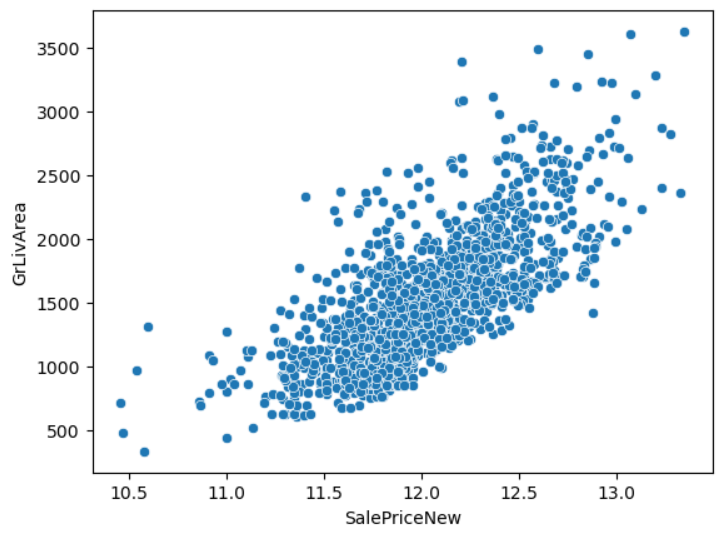
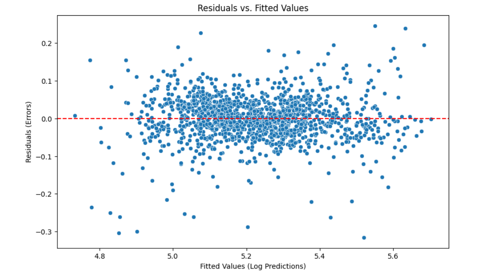

Kaggle Housing Prices — Predictive Modeling
94%
Training Accuracy
Training Accuracy
81
Features
Features
XGboost
Best Performing Model
Best Performing Model
Summary
Built regression models to predict housing prices using Kaggle’s “House Prices: Advanced Regression Techniques” dataset. Applied preprocessing, feature engineering, and algorithm comparison.
Problem
Predicting house prices based on various features is a common regression problem in data science. The goal is to accurately estimate the sale price of a house in Ames, Iowa given its attributes.
Approach
- Data Cleaning: Handled missing values using median imputation for numerical features and mode imputation for categorical features.
- Feature Engineering: Created new features such as Total Square Footage and Age of the House. Converted categorical variables using one-hot encoding.
- Modeling: Compared multiple regression algorithms including Linear Regression, Random Forest, and XGBoost. Tuned hyperparameters using Grid Search with cross-validation.
Results
- Achieved an RMSLE of 0.16 on the Kaggle Leaderboard
Visualizations
- Living Area: One of our strongest predictors was the living area of the house. As expected, larger homes tended to have higher sale prices. The relationship was generally linear, but there were some outliers with very high prices for their size.

- Basement Quality This heatmap shows the corralations between different basement qualities and saleprice. In stark contrast to GrLivArea the quality of a basement had almost no effect on the saleprice of a house. However, the presence of a basement did have a slight positive correlation with saleprice.

- Error Analysis This is exactly what we want to see out of a good model. The errors are not skewed one way or another (they do not depend on the price of the house) and they are normally distributed around 0.
